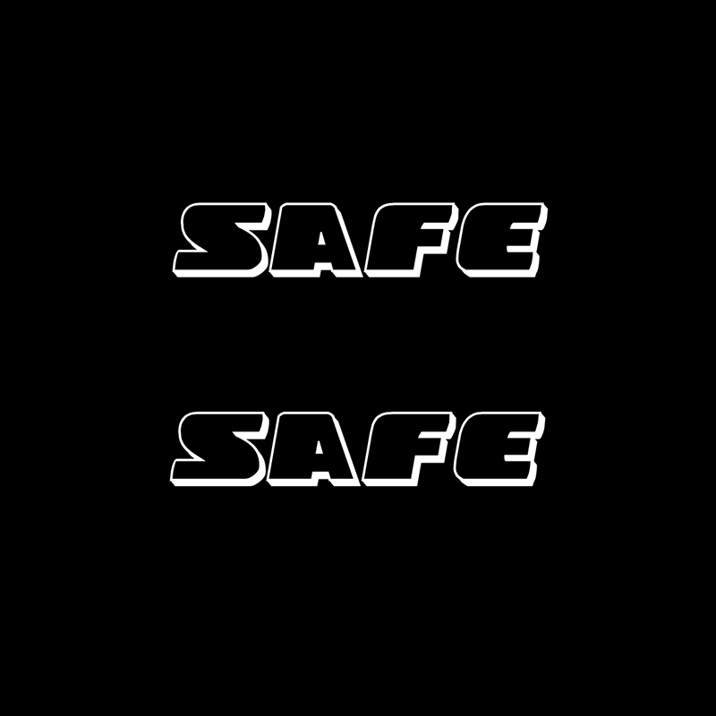

The word "safe" will be constant on the users mouse, but when they hover towards the center the word, typeface, and color will change. To emulate the police vehical I chose a typeface that is similar to police cars and used flashing red and cyan colors.